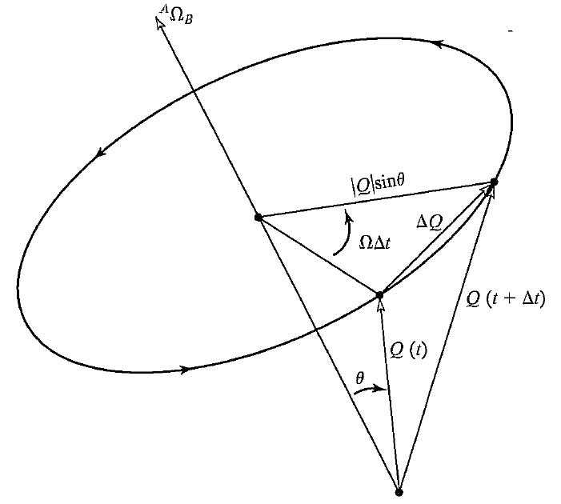
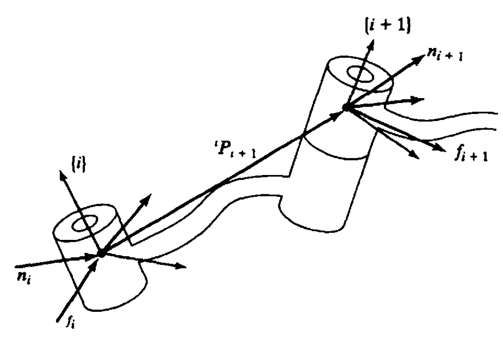

Jacobians: Velocities & Static Forces¶
Linear Velocity Vector¶
Differentiation of Position Vector
We calculate the velocity of a point in frame \(\{B\}\), by derivative of its position
which is also a vector, so could be expressed in another frame \(\{A\}\), denoted as
Here we have two notations. Note that we express a velocity in two frames, or the velocity is dependent on two frames.The first one with respect to which is the differentiation is done, and one in which the resulting velocity is done.
Linear velocity expressed in different frames
Actually, we calculate differential in the frame of \(\{B\}\), we mean that the two frames are both \(\{B\}\), i.e.
For simplicity, we write the latter form usually.
Since the resulting velocities are expressed usually in the same frame which it gets differential, we want to get rid of it by rotation matrix
We usually very often consider the velocity of the origin of a frame raletive to an understood universe reference frame, like Solid frame. And we denote this velocity of an origin as
where the reference frame is \(\{U\}\) and the frame whose origin measured is \(\{C\}\).
Angular Velocity Vector¶
Angular Velocity Vector
Define \(^A\Omega_B\) to be the instantaneous axis of the rotation of frame \(\{B\}\) relative to \(\{A\}\). In part Supplementary info, we will discuss more about why we use these vector to represent angular velocity.
Due to a vector could be determined on if its direction and magnitude are both determined, we let its magnitude to express the speed of rotation.
Similar to Linear velocity vector, we can express angular velocity vector in different frames. We introduce
to show the angular velocity of frame \(\{C\}\) relative to some understood reference frame \(\{U\}\). Thus \(^A\omega_C\) means angular velocity of frame \(\{C\}\) expressed in frame \(\{A\}\) but default relative to frame \(\{U\}\).
Linear Motions in different frames¶
Linear motion in frame with Linear velocity: Prismatic
Assume frame \(\{B\}\) is located relative to \(\{A\}\), with a position vector \(^AO_B\), and rotation matrix \(^A_BR\). Here we assume \(^A_BR\) does not change with time. A point \(Q\) expressed in frame \(B\) is \(^BQ\), and has its linear velocity \(^BV_Q\). Then
where we call \(^AV_{O_B}=^AV_B\) are the linear velocity of frame \(\{B\}\) relative to frame \(\{A\}\).
recall same point in different frames, we have \(Q\) express in frame \(\{A\}\)
If we have velocity of \(Q\) in frame \(\{B\}\)
then its expression in frame \(\{A\}\) is
\(\square\)
Linear motion in frame with Rotational velocity: Revolute
Assume frame \(\{B\}\) coincide with \(\{A\}\) with zero linear velocity, i.e. their origins \(O_A\) and \(O_B\) remain coincident all the time. Let the orientation of \(\{B\}\) changes with time, expressed by \(^A\Omega_B\).
(i) A point \(Q\) fixed in frame \(\{B\}\) (i.e. \(^BV_Q=0\)), would apparently move because of the rotation of frame \(\{B\}\). Then
(ii) The point \(Q\) also moves in frame \(B\), i.e. \(^BQ\) (or \(^AQ\)) would change and \(^BV_Q\neq 0\). Then
(i) Here we have to find out the movement of \(Q\) viewed in frame \(\{A\}\). See the following picture in details.

Check that the magnitude of position change in small time \(\Delta t\) is
and the direction is perpendicular to both vector \(^A\Omega_B\) and \(^AQ\). Actually, we can easily get the following relation if readers have learned general physics
(ii) By superposition of velocities and former equation of linear velocity relationship
\(\square\)
General case
Adding the above two cases up, we have a formula for linear velocity of a point \(Q\) in frame \(\{B\}\) expressed in another frame \(\{A\}\)
where the first item is the translation of \(\{B\}\) relative to \(\{A\}\), the second item is the rotation of \(\{B\}\) relative to \(\{A\}\) and the last item is the translation movement of \(Q\) itself expressed in \(\{A\}\), respectively.
supplementary info¶
Here we talk a little more with rotation item \({^A\Omega_B}\times {^AQ}\).
Lemma 1: properties of the derivative of an orthonormal matrix
For orthonormal matrix \(R\in \mathbb{R}^n\), or rotation matrix (\(n=3\)) in this course, define \(S=\dot{R} R^T\), then it satisfies
which is a skew-symmetric matrix.
By properties of orthonormal matrix, we have
then we take a derivative on both sides
by propeties of transpose, we have
which just means the result.
\(\square\)
Still the case (ii) in Linear motion in frame with Rotational velocity: Revolute, now we deduce the velocity relationship in another perspective.
Lemma 2: rotational description
If we define \(^A_BS={^A_B\dot{R}} {^A_BR}^{T}\), then
Easy to see that \(^A_BS\) satisfies the property in Lemma 1.
We start from
Take a derivative on both sides, we have
which gives the result if we substitute \(^A_BS\) in.
\(\square\)
Compared to the result we get in Linear motion in frame with Rotational velocity: Revolute, the following theorem comes out naturally.
Theorem for skew-sysmmetric matrix and vector cross-product
Define a vector \(\Omega=[\begin{array}{ccc}\Omega_x& \Omega_y& \Omega_z\end{array}]^T\) and a point \(Q\), then
where \(S\) is a skew-symmetric matrix with an expression
We call \(\Omega\) angular velocity vector, the same meaning as we defined in Angular Velocity Vector.
We calculate the cross product \(\Omega\times Q\) gives
rewrite the above calculation in form of a linear transformation, or matrix premultiplication \(S\cdot Q\) as
\(\square\)
We dig into the representation of angular velocity vector \(\Omega\).
Theorem for physical insight concerning angular velocity vector
Angular velocity vector could be expressed as
where \(\hat{K}\) is the rotation axis and \(\dot{\theta}\) is the speed of rotation about the axis.
Consider the differentiation of a rotation matrix \(R\)
Here we rewrite \(R(t+\Delta t)\) in a sense of rotation. That is, in time period \(\Delta t\), frame \(\{B\}\) rotates about some axis \(\hat{K}\) with a little angle \(\Delta \theta\) (using expression of equivalent axis), and then we get the final rotation matrix
equation \(\ref{R-differential}\) becomes
recall that we have a linear approximation of \(R_K(\Delta\theta)\) when \(\Delta\theta\) is quite small, i.e.
so equation \(\ref{R-differential2}\) becomes
Postmultiply \(R^{-1}\) on both sides we have
Comparing the result in Theorem for skew-sysmmetric matrix and vector cross-product, we have
\(\square\)
Actually, equation \(\ref{physical-rotation}\) deduced by its physical meaning, is equivalent to what we have deduced in Lemma 1: properties of the derivative of an orthonormal matrix.
Velocity Propagation¶
Now we consider velocity propagations. Here we use \(\omega_i\) and \(v_i\) to be the angular and linear velocity of the center of frame \(i\) (derivative calculated in frame \(0\)), respectively. And their expression in frame \(\{i-1\}\) is \(^{i-1}\omega_i\), \(^{i-1}v_i\), respectively.
Linear Velocity
Assume we have frame \(\{i\}\) and \(\{i+1\}\).
(i) Next joint is Revolute.
In frame \(i\), we have \(^{i}v_{i+1}\) expressed by
Premultiply both sides \(^{i+1}_i R\), we have
(ii) Next joint is Prismatic.
In frame \(i\), we have \(^{i}v_{i+1}\) expressed by
Angular Velocity
Assume we have frame \(\{i\}\) and \(\{i+1\}\).
(i) Next joint is revolute.
In frame \(i\), we have \(^{i}\omega_{i+1}\) expressed by
where \(\dot{\theta}_{i+1}\) means the magnitude of rotation speed, \({^{i+1}\hat{Z}_{i+1}}\) means the rotation aixs expressed in frame \(i+1\), i.e. \({^{i+1}\hat{Z}_{i+1}}=\left[\begin{array}{ccc} 0&0&1\end{array}\right]^T\). Note that rotation matrix \(^i_{i+1}R\) rotates the axis of rotation of joint \(i+1\) into its description in frame \(i\).
Premultiply both sides \(^{i+1}_i R\), we have
(ii) Next joint is Prismatic.
Remove item for axis rotation from equation \(\ref{revolute-angular}\), we have a much simpler one for prismatic.
Jacobians¶
In the field of robotics, we generally use Jacobians that relate joint velocities to Cartesian velocities of the tip of the arm. In 3D circumstances, we have the small change of linear and angular displacement of the end effector
by dividing both sides \(\Delta t\) and let \(\Delta t\rightarrow \infty\), we have linear and angular velocity of the end effector
where \(\dot{\Theta}=\left[\begin{array}{cccccc} \dot{\theta_1}& \dot{\theta_2}& \dot{\theta_3}& \dot{\theta_4}& \dot{\theta_5 }& \dot{\theta_6} \end{array}\right]^T\) denotes six (generally) rotation axis of the manipulator.
Changing a Jacobian's frame of reference
Given a Jacobian matrix in frame \(\{B\}\), i.e.
then
which gives
Static Forces¶
We also have to consider how forces and moments "propagate" from one link to the next. We wish to solve for the joint torques that must be acting to keep the system in static equilibrium. Here we do not consider the gravity of links.
Symbols for the force and torque
Denote \(f_i\) to be the force exerted on link \(i\) by link \(i-1\), \(n_i\) to be the torque exerted on link \(i\) by link \(i-1\). Check the following image for details.

so for link \(i\), it follows force and torque equilibrium
thus we have the propagation formula
which transfer the force from the end effector to the base \(0\).
To write these equations in terms of only forces and moments defined within their own link frames, we transform with the rotation matrix
After computing the forces and torques exerted on each link, now we have to consider, in each joint, how much force or torque should we provide so as to keep the system in equilibrium?
Forces or Torques provided by joints
(i) For revolute joint \(i\), \(^if_i\) prevents it from translation, and \(^in_i\) prevents it from rotation in other directions. So if the joint want to rotate, we project \(^in_i\) into the rotation axis, i.e. \(\hat{Z}_i\), and
(ii) For Prismatic joint \(i\), \(^in_i\) pervents it from rotation, and \(^if_i\) prevents it from translation in other directions. So if the joint want to translate, we project \(^if_i\) into the translation axis, i.e. \(\hat{Z}_i\), and
where we still use \(\tau_i\) to represent the linear force in (ii).
Jacobians in the force domain¶
Here we use the principle of virtual work to demonstrate the relationship in force.
From a general frame, we have
where \(\mathcal{F}_{6\times 1}=[\begin{array}{cc} F& N\end{array}]^T\), \(F\) is a force vector, and \(N\) is a moment vector.
by definition of Jacobian, we have
So